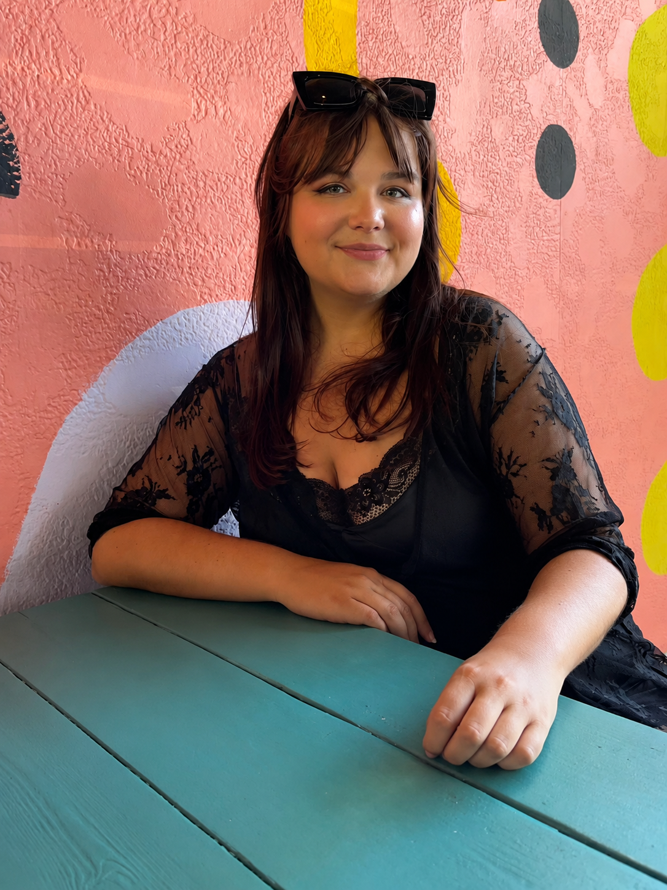
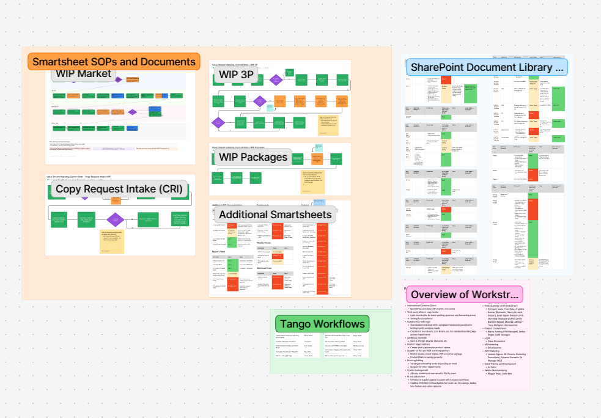

Writer. Systems Thinker. Storytelling Enthusiast.
I take a right-brain approach to left-brain work. My creativity is grounded in both compelling copywriting and a work-smarter-not-harder mentality. Aiming to write, understand and connect with an audience, whether B2B or B2C, drives my work ethic. Equally impactful is my drive to develop scalable, streamlined workflows.
I'm a Tampa Bay native with a love for all things storytelling. My passion for writing and reporting was honed at Fordham University, where I graduated in 2020 with a Bachelor of Arts in Journalism and gained newsroom experience at NPR affiliate WFUV.
In my free time, you're likely to find me at a local movie theater, browsing the aisles of a library, cheering on the Rays at a ballgame or relaxing at home with my partner and cat.
Selected Work
Workflow Documentation & Process Architecture
Designed and maintained a centralized operational ecosystem for product content development, documentation management and team enablement.
Project Overview
Developed an interconnected documentation framework that mapped key content operations from intake through publication. The system combined standard operating procedures, SharePoint documentation libraries, workflow documentation and value stream maps into a single source of operational truth.

Stationary Sectionals Market Video
Editorial copywriting for a motion-based media asset displayed on TVs in the product area at an industry market. The copy was written to feel short, polished and visually complementary to the pacing of the video.
Project Overview
This piece was developed as a market-facing product storytelling asset, using concise editorial language to support the visual flow of the video. The goal was to create copy that could quickly communicate comfort, style and merchandising value in a high-traffic showroom environment.
Reclining Furniture Feature Video
Feature-forward marketing copy for a motion-based video asset highlighting the convenience, comfort and immersive technology built into reclining furniture.
Project Overview
This piece was written to spotlight richly convenient product features in a way that felt elevated, accessible and lifestyle-driven. The copy framed reclining furniture as more than seating, instead positioning it as a relaxation hub and entertainment destination.
Bracken King Canopy Bed
Luxury product storytelling that applies elevated editorial language while supporting merchandising goals in a premium eCommerce environment.
Published Product Copy
Clean-lined silhouettes and natural materials are harmoniously paired in the Bracken canopy bed. A French oak finish enhances the wood's timeless character, while the modern canopy look brings an air of heightened elegance to your bedroom. With artisanal style and refined design, this bed is an artfully crafted approach to modern aesthetics.
Neo Dining Table
Editorial product copy created to convey contemporary sophistication, material richness and everyday usability in a premium digital shopping experience.
Published Product Copy
Refined simplicity meets everyday comfort in the Neo dining table. Its dark espresso finish adapts effortlessly to your personal style. A thick tabletop and interconnected legs lend a substantial feel. Elevated yet inviting, this table's combination of gentle curves and clean lines helps you create a serene dining space.
Let's Connect
I'm always interested in conversations about content strategy, workflow development, editorial storytelling, AI-assisted content systems and opportunities to build better experiences through language and process design.